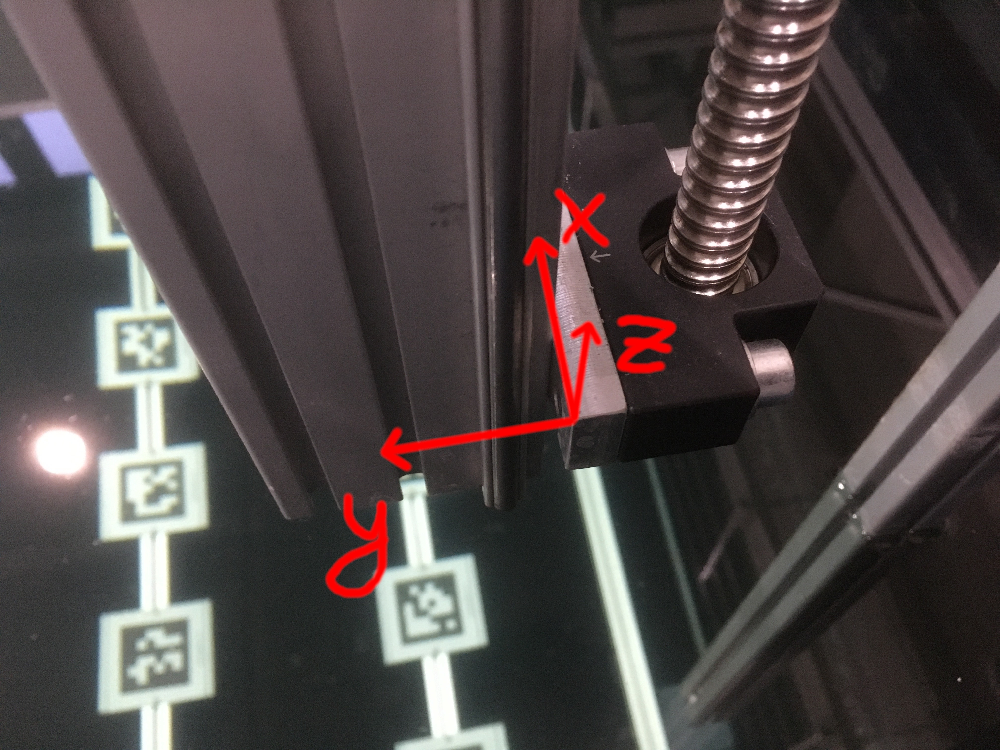

General Information
Coordinate System
The reference point of the gantry is the edge of the z-axis spindle mount as depicted in the image below.
The offset to the tank’s coordinate system is measured relative to the tank’s walls (not the steel frame).
According to the localization package the offset in x-direction is 0.144m and 0.342m in y-direction.